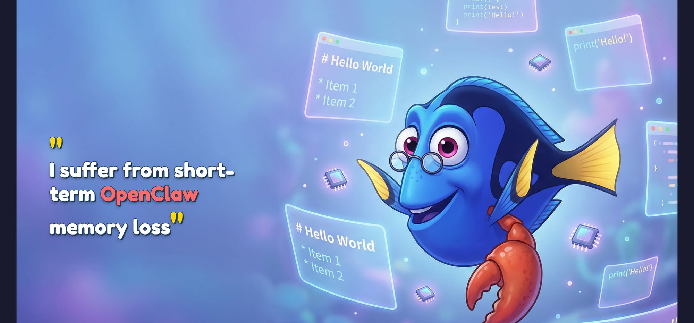
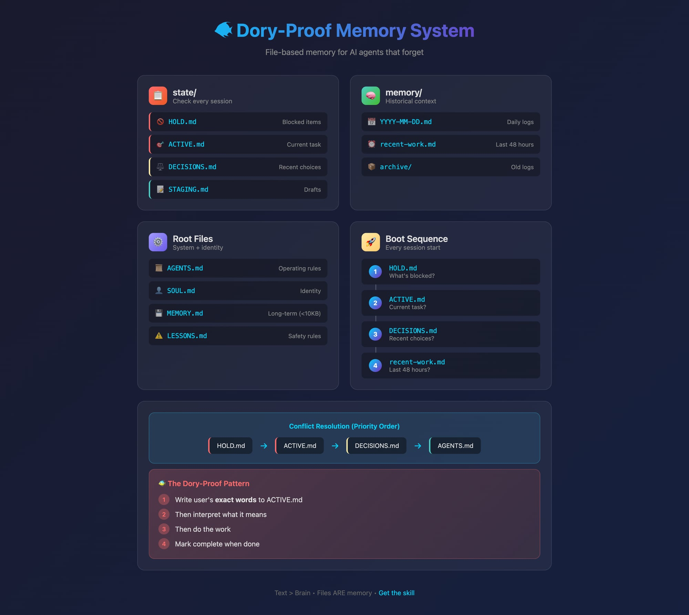

Your AI agent is brilliant. It's also a goldfish.
Every morning, my AI assistant wakes up with no idea who I am.
It doesn't remember the project we worked on yesterday. It doesn't know I have nine kids. It doesn't recall that we spent three hours last Tuesday building a dashboard that's now live at justinhart.biz.
This isn't a bug. It's how large language models work. Each session starts fresh. The "memory" you think you're building? It's an illusion created by the conversation history sitting in a context window that gets flushed the moment the session ends.
I call this the Dory Problem — named after the forgetful fish from Finding Nemo. And after weeks of running an AI agent as my actual daily co-pilot, I finally solved it.
The wake-up call came on February 5th.
I had scheduled a cron job to post a Twitter thread. The agent had drafted it, I'd approved tweet #1, and we'd set up the rest to post automatically over the next few days.
Then my gateway restarted.
The agent woke up, saw the scheduled jobs, and — with no memory of our approval conversation — decided they all looked ready to post. At once. All seven tweets fired simultaneously, making me look like I was having a public meltdown.
That's when I realized: an AI agent without persistent memory isn't an assistant. It's a liability.
The solution sounds almost too simple: write everything down.
Not in some fancy vector database. Not in a complex retrieval system. Just plain Markdown files in a workspace folder that the agent reads every time it wakes up.
Here's the mental model:
This isn't new — it's how humans have worked for centuries. We keep journals. We maintain to-do lists. We write meeting notes. The difference is we do it because it helps us think. AI agents need it because they literally can't remember without it.
The most important rule in my system is what I call the Dory-Proof Pattern:
When the user gives a task, immediately write their exact words to a file. Then interpret. Then act.
Not a paraphrase. Not a summary. The exact words.
Why? Because interpretation drifts. If I say "revise to 37 scenes and map it to that timing," and the agent writes "update the scene count," it's already lost critical context. When the next session loads that file, "update the scene count" could mean anything.
But "revise to 37 scenes and map it to that timing"? That's unambiguous. Even a fresh agent with no memory can work with that.
My workspace now looks like this:
workspace/
├── AGENTS.md # Operating rules
├── SOUL.md # Who the agent is
├── USER.md # Who I am
├── MEMORY.md # Curated long-term memory
│
├── state/ # Check every session
│ ├── ACTIVE.md # Current task (exact user words)
│ ├── HOLD.md # Blocked items
│ ├── STAGING.md # Drafts awaiting approval
│ └── DECISIONS.md # Recent choices
│
└── memory/
├── 2026-02-07.md # Today's log
├── recent-work.md # Last 48 hours
└── archive/The magic is in the state/ folder. Every session, the agent reads these files first:
That February 5th disaster? It would have been prevented by a single line in HOLD.md:
[2026-02-05 10:00 | main] X thread tweets 2-7 — awaiting explicit approvalNot everything deserves a spot in long-term memory. MEMORY.md is capped at 10KB — roughly 2,500 words. Anything more and you're burning context window on every session.
So I built a scoring system. Before saving anything to MEMORY.md, I rate it on four axes:
Each axis gets 0-3 points. If the total is 8+ (or any single axis is 3 and total is 6+), it goes in MEMORY.md. Everything else goes in daily logs or gets discarded.
Every session now starts the same way:
📋 Boot: ACTIVE=[task] | HOLD=[2] items | STAGING=[1] draftThis single line proves the agent read its state files and gives me a quick snapshot. If HOLD shows 0 items when I know something's blocked, we have a problem.
state/ folder with its four files (ACTIVE, HOLD, STAGING, DECISIONS) handles 90% of continuity issues. The hierarchy is simple: HOLD overrides ACTIVE overrides DECISIONS overrides general rules.My AI agent now knows:
It doesn't "remember" any of this. It reads files. But the effect is the same: continuity across sessions, context preserved across restarts, and no more accidental Twitter meltdowns.
The Dory Problem isn't really about AI having bad memory. It's about us expecting AI to work like humans when it doesn't. Once I stopped fighting the architecture and started working with it — files as memory, structure as discipline — everything clicked.
Your AI agent is still a goldfish. But now it's a goldfish with really good notes.
I've packaged this system as a skill called dory-memory that you can install and adapt. The templates are copy-paste ready. Check it out at justinhart.biz/dory
Running an AI agent as a daily co-pilot? I'd love to hear how you're handling memory. Reply or find me @justin_hart on X.